Lariushin.ORG Fungi
Леоциомицеты (Leotiomycetes)
Ритисмовые (Rhytismatales)
Ритисмовые (Rhytismataceae)
Коккомицез зимний (Coccomyces hiemalis)
Lariushin.ORG Fungi
»
Леоциомицеты (Leotiomycetes)
»
Ритисмовые (Rhytismatales)
»
Ритисмовые (Rhytismataceae)
Select
All
None
Send feedback
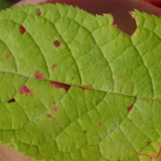
1
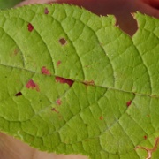
2
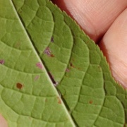
3
4
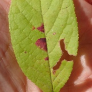
5
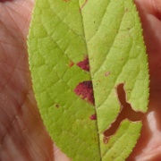
6
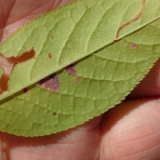
7
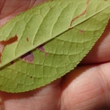
8
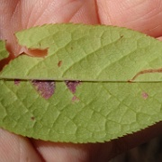
9
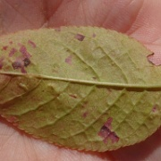
10
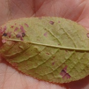
11
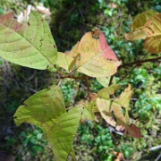
12
Next:
Ритисма брусничная (Rhytisma vaccinii)
Species on photos were identified with help of:
Olev Abner
Jana-Maria Habicht
Sulev Järve
Urmas Ojango
Fungarium.INFO photos and identification
by
Lariushin.ORG
is licensed under a
Creative Commons Attribution-NonCommercial-ShareAlike 4.0 International License
.
Based on a work at
fungarium.info
.


/thumbs/DSC05453_.jpg)